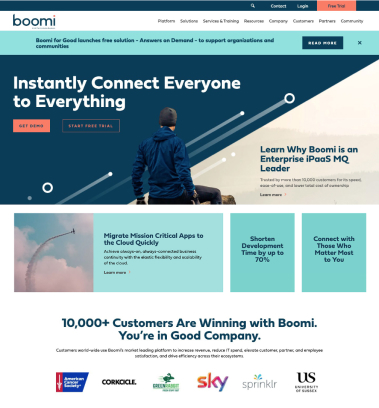
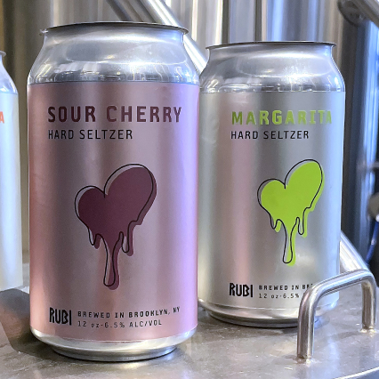
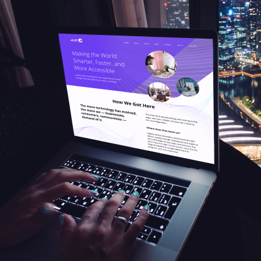
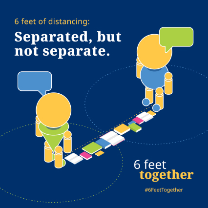
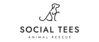
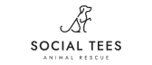

Manual Labor is proud of all the Great Work over these 10 years: from rebranding B2B tech leaders like Boomi to building ecommerce websites like Rubi Hard Seltzer, ML worked with some of the coolest people at the most interesting brands. ML has found a place as the strategic partner who “connects the dots” for brands and teams: we are there with our hearts and minds for clients to offer outside perspective, guide strategy, and help them make connections they might not otherwise.
Repositioning Boomi for a $4B exit
As a leading B2B SaaS company, Boomi is trusted by more than 18,000 customers globally to discover, manage, and orchestrate data and applications.
Manual Labor partnered with Boomi to identify who Boomi is and created a visual identity that met the personality, tone, and goals of the Boomi tomorrow. The partnership and collaborative work over the past three years resulted in a $4B sale by Dell Technologies to private equity pioneers Francisco Partners and TPG.

Building the Heart of Rubi
With an estimated $8B market, health trends leaning away from to calorie-laden drinks, and consumers always looking for authentic, independent brands, Rubi was launched.
Manual Labor was tapped to build the Brooklyn-based hard seltzer from the ground up. Focusing on setting the brand apart from the existing homogenous market, ML continues to be a key partner in building the brand from what Rubi tastes like, what the brand looks like and how Rubi sounds and connects with consumers.

Helping Alef take on the Big 3 Carriers in Mobile 5G
In the world of 5G, the words ‘transformation’ and ‘connection’ carry a lot of weight - and real impact. Alef, a pioneer in mobile edge computing, needed to ensure its brand reflected the opportunity and momentum: the art of the possible.
Alef’s leadership and marketing teams partnered with Manual Labor to re-brand, re-position, and launch Alef to drive the next mobile wave of technological innovation that improves the way we live, work, play - a $4.1 trillion economy by 2030.

Joining the United Nations Global Call Out to Creatives
In March 2020, the United Nations sent a global call out to creators to help stop the spread of Covid-19. The UN asked creatives to help translate critical public health messages into work that will inform and engage people across different communities, cultures, languages and platforms.
Manual Labor quickly responded to this callout and designed a "6 Feet Together" campaign — with the sentiment that while we were physically separated, but we don't have to be separate.

Even more importantly than Great Work is Good People. The most valuable thing to come out of this decade-long labor of love is what Manual Labor calls the Good People Network.
Since 2020, ML has doubled in size –– which is more than we imagined even three years ago. We've been able to increase capabilities as an organization, which has fostered us to think more about other opportunities. The more great work we do, the more good people we attract, and the more friends and peers we have who inspire each other.
 
